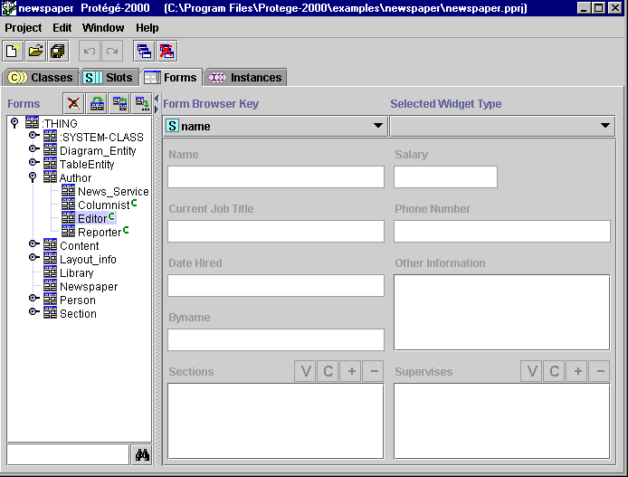
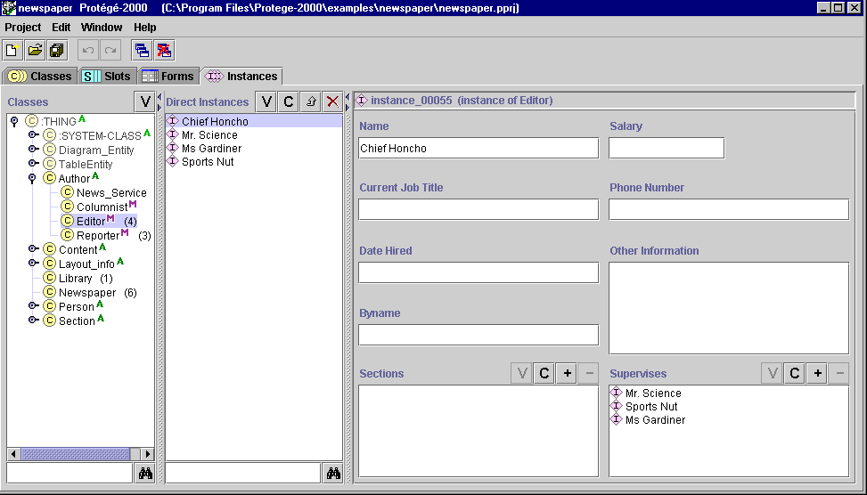

The Forms Tab
The Forms Tab

The Forms tab provides a single window in which you may view and edit
prototype forms.
The forms you design and create at the Forms tab can be viewed in their final
format at the Instances tab. End
users will use the finished forms to enter instances into
the knowledge base.
The Forms tab window consists of two panes:
- The Forms pane at the left shows the hierarchy of all the classes and
allows you to clear all customizations from your form as well as to create a
form with one of the following preset layouts: the default layout, the
layout of a form that has been created for a parent, or the layout of a form
for another class.
- The Form Edit pane shows the layout of the form associated to the selected
class. Each slot in the class is associated with a user-interface widget on
the form. If you have not created or modified the form, Protégé-2000 uses
a default layout based on the slot type and cardinality.

As mentioned above, the forms you design will appear at the Instances
tab. The following picture shows the same form as it appears under
Instances:

Next: The Forms Pane
Forms Table of Contents